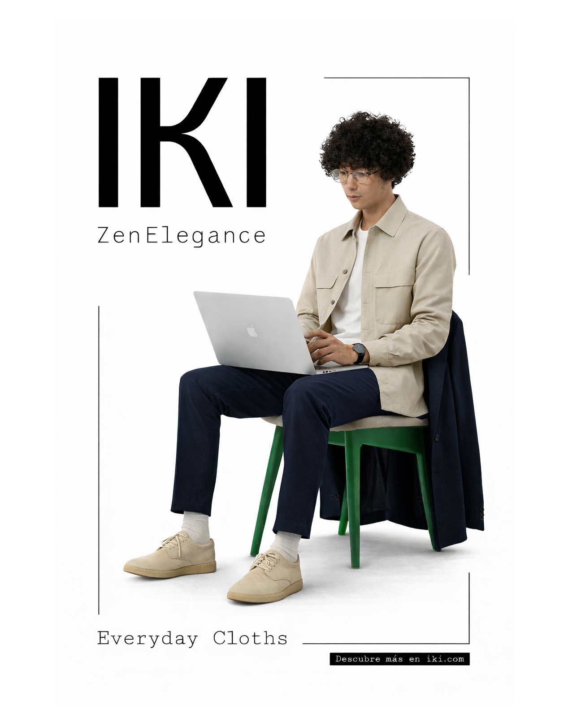
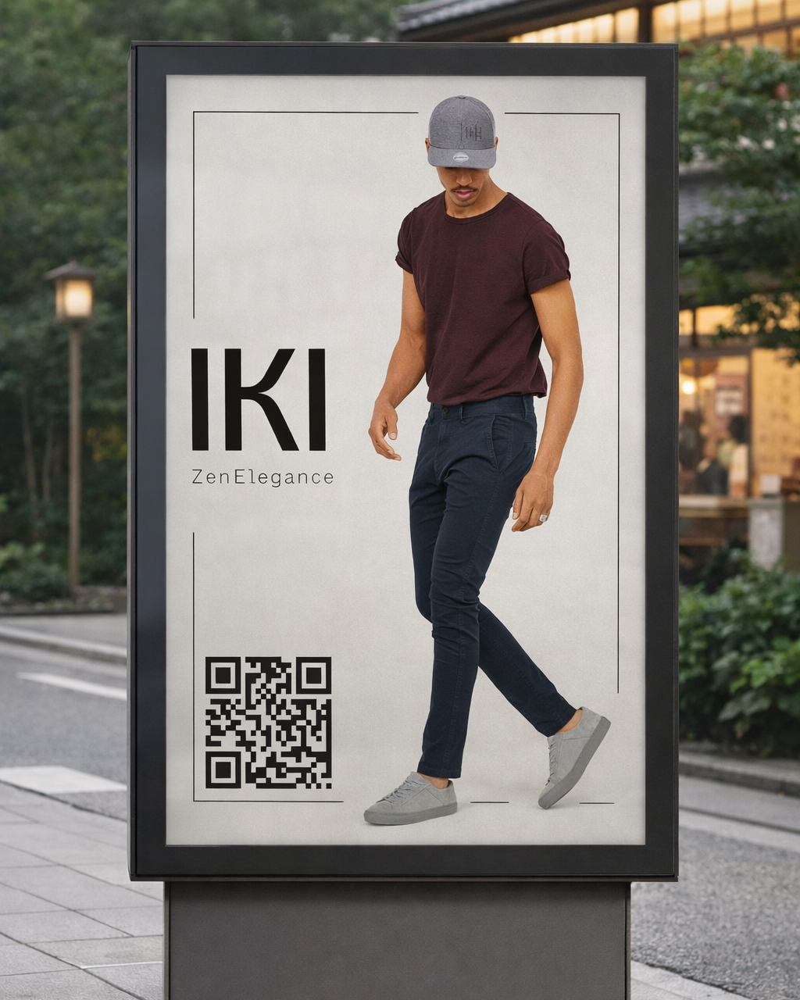
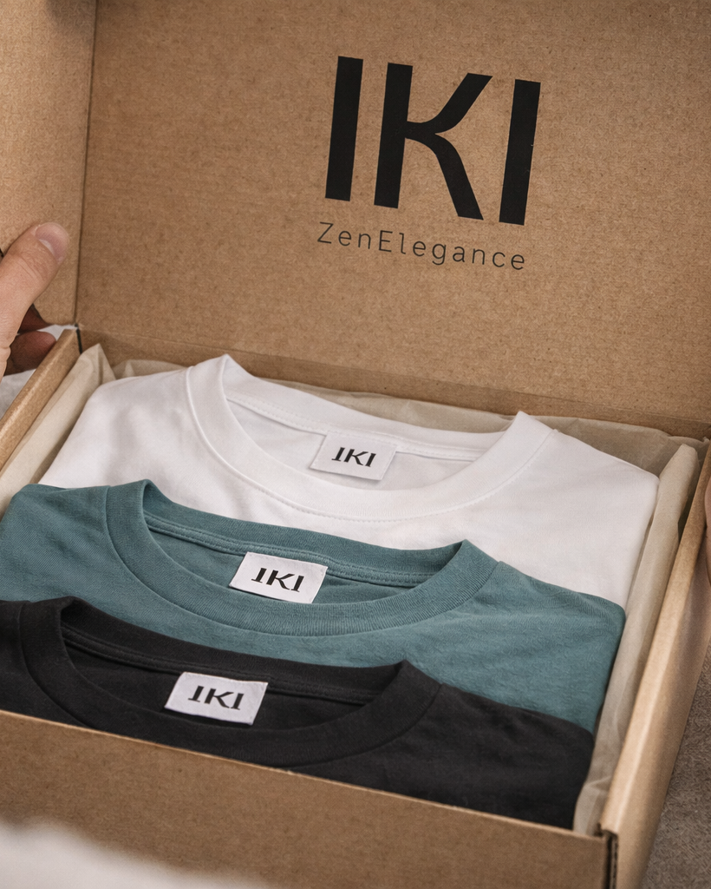
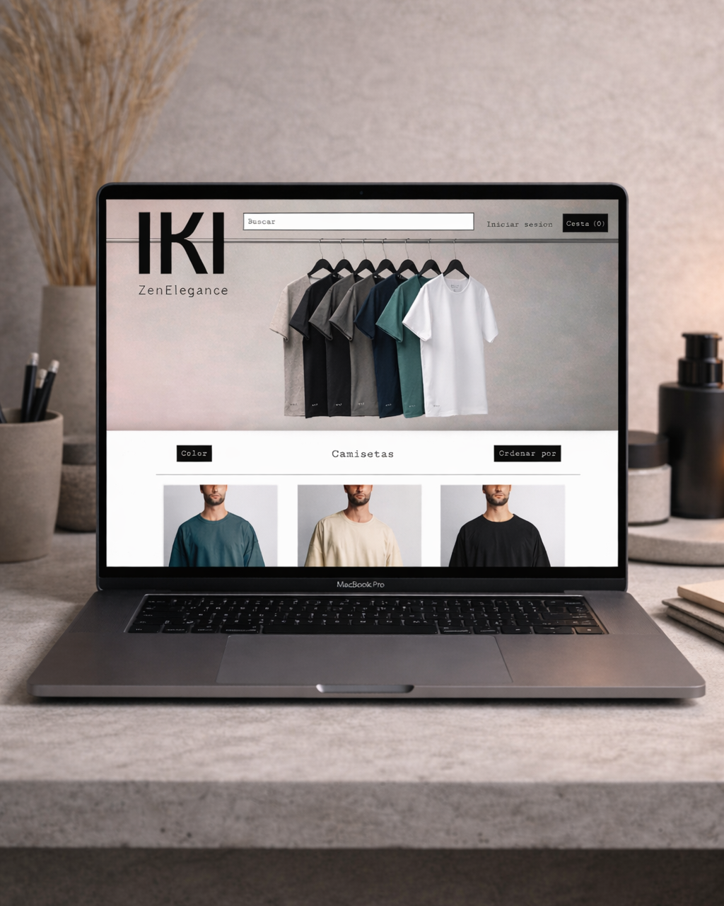

El reto
El brief era abierto: inventar una marca de moda, construir su identidad completa y empaquetarlo todo en un libro de marca que sirviese de manual para cualquiera que la cogiese después. Sin cliente real al otro lado, la trampa era fácil — dejarse llevar por la estética y olvidar el sistema. Decidí lo contrario: trabajar IKI como si tuviera que abrir tienda al lunes siguiente.
La idea de partida fue el concepto japonés iki: elegancia sin esfuerzo, refinamiento que no necesita gritar. Desde ahí construí logo, paleta, tipografías, tono de comunicación y un repertorio de aplicaciones — papelería, packaging, cartelería, mupi, web, merch — todo unido por las mismas reglas. La prueba real era que la marca se reconociera incluso fuera de su soporte habitual.
Identidad
Construido sobre una proporción cuadrada y un peso tipográfico contundente, pensado para resistir tanto a tamaño grande como reducido a icono.

Decisiones clave
01
Logotipo cuadrado, peso máximo.
Apuesta por una marca que aguante reducida a icono sin perder identidad. La proporción cuadrada simplifica todo lo que viene detrás — packaging, etiquetas, favicon.
02
El vacío como material.
Trabajar el blanco como elemento gráfico, no como sobra. Cada pieza usa más aire del que parece necesario — y por eso la marca se reconoce a distancia.
03
Un único tono, sin excepciones.
Renuncia voluntaria al color como gancho. Negro, blanco y una textura controlada. Disciplina antes que decoración: lo que no aporta, fuera.
Aplicaciones
Del cartel al packaging, pasando por papelería y digital. Cada pieza pasa por la misma lógica: tipografía, escala, aire — y un punto de tensión calculado para que la marca no se vuelva mueble.






Proceso
01
Research
Análisis de marcas con códigos minimalistas y referentes japoneses. Mapa de qué espacio quedaba libre.
02
Concepto
Traducir iki a un sistema visual: jerarquía, vacíos, ritmo. Dirección antes de tocar tipografía.
03
Sistema
Logo, paleta, tipografías y reglas de uso. Cada decisión documentada en el libro de marca.
04
Aplicaciones
Despliegue en soportes reales para testar coherencia. Lo que no aguantaba la prueba se reescribía.